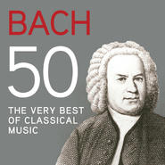
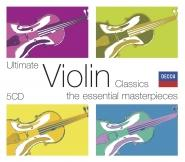
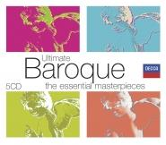
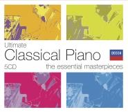
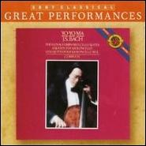

那些耳熟能详的巴赫旋律
收录一些常常在耳边飘过，但总是不知其名的巴赫旋律，多数都属于一些本身不怎么出名的组曲或协奏曲。徜徉在古典音乐的海洋中，随手拾遗 :)
虾米精选集: http://www.xiami.com/collect/41205371
Arioso
试听: Classical Guitar
试听: Violin
- 所属专辑: Bach 50, The Very Best Of Classical Music
- 演唱者: Various Artists
Ave Maria
BWV 846
后由 Charles Gounod 改版为人们熟知的版本；与 Schubert 更为著名的 Ave Maria 同名。
试听: Piano
- 所属专辑: Bach, J S: The Well-Tempered Clavier, Book 1
- 演唱者: Maurizio Pollini
试听: Violin & Piaon
- 所属专辑: Ultimate Violin Classics: The Essential Masterpieces
- 演唱者: Various Artists
试听: Celtic Woman
Air on the G String
BWV 1068
Air on the G String 的名字是 August Wilhelmj 在改编时所取。
试听: Violin & Cello
- 所属专辑: Ultimate Baroque: The Essential Masterpieces
- 演唱者: Various Artists
试听: Evangelion
试听: Libera
Herz und Mund und Tat und Leben
试听: Piano
- 所属专辑: Ultimate Classical Piano: The Essential Masterpieces
- 演唱者: Various Artists
试听: Evangelion
- 所属专辑: THE END OF EVANGELION
- 演唱者: 鷺巣詩郎
Cello
BWV 1007
是无伴奏大提琴组曲 (Six suites for unaccompanied cello) 1007-1012 中的第一曲，所以全称应为「G大调第一无伴奏大提琴组曲」。
试听: Janos Starker
试听: Yo-Yo Ma
- 所属专辑: Bach: Unaccompanied Cello Suites [Great Performances]
- 演唱者: Yo-Yo Ma
试听: Evangelion
评论（4）